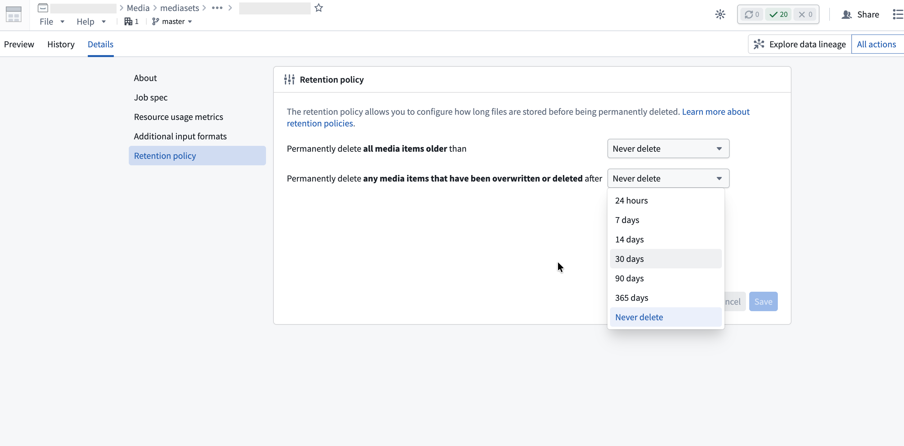

Beyond configuring the permitted file formats for a media set, you can also configure advanced settings, such as how to write media to the media set, and how long to keep media items.
The transaction policy of a media set determines how media items are added to a media set. A media set can have one of two transaction policies; transactionless or transactional.
The following details are true for a media set with transactionless policies:
The following details are true for a media set with transactional policies:
The semantics of transactional media sets are most similar to Foundry datasets. When writing incremental transforms, transactional media sets support the replace and modify write modes. Transactionless media sets only support the modify write mode.
You can configure retention policies to permanently delete media items. This is a helpful option to minimize storage costs. To configure retention policies, open the media set and select the Details tab, then configure the options in the Retention policy section.

This policy permanently deletes media items after a fixed period from when they were uploaded. For example, if you configure a 14-day retention period, each media item will be permanently deleted 14 days after it was uploaded.
This policy permanently deletes overwritten media items after a fixed period from when they were overwritten. An overwritten item is a media item that has been replaced by a newer upload at the same path or has been soft deleted. You can view overwritten items in the media item version history.
For example, if you configure a 7-day retention period for this policy and upload five images to the path example.png over time, the four older versions will be deleted 7 days after they were each overwritten. The most recent upload remains accessible indefinitely until it is overwritten.
You can configure both retention policies on the same media set. A media item will be permanently deleted when either policy's conditions are met, whichever comes first.
Once a media item's retention window expires, it will be permanently deleted and no longer accessible. For example: